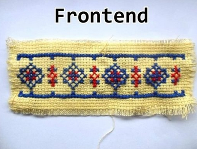

Front end

Este projeto objetiva criar uma página usando Bootstrap que interaja com um servidor por sua API.
Podemos interagir com APIs manualmente através de um software chamado API Client, como o Insomnia ou Postman. O cliente envia solicitações para o servidor, que processa as solicitações e devolve uma resposta.
Para interagir com uma API programaticamente usando Javascript, usamos o método "fetch" ou bibliotecas como o jQuery ou Axios que disponibilizam as ferramentas para enviar requisições à API.
Ao terminar esse projeto, você possuirá as ferramentas mais básicas para escrever pequenas aplicações que utilizam de dados de serviços externos como redes sociais, previsão do tempo, banco de fotos ou qualquer API pública.
O desenvolvimento frontend é extremamente relevante, pois é a parte da aplicação que recebe o usuário final.
Aplicações que comunicam com uma API são extremamente comuns, pois permitem que as empresas donas do software recebam e processem os dados de seus usuários sem que exponha suas regras de negócios, pois código do frontend é, naturalmente, exposto ao usuário.
Os projetos #1 e #2 são pré-requisitos deste projeto.
*Este projeto é pré-requisito do projeto #5.
Em todas as atividades desta etapa você usará o serviço gratuito CrudCrud, que é uma API conveniente na criação de aplicações de teste ou protótipos.
O objetivo da primeira atividade é ambientar com o uso de uma API Client, um software especializado em interagir com APIs. O uso do Thunder Client é indicado por ser uma extensão do VSCode, nosso ambiente de desenvolvimento escolhido.
Pegue o link disponibilizado em crudcrud.com e faça um total de 6 requisições HTTP, sempre na rota "/pessoas":
Nesta atividade, você realizará exatamente as mesmas requisições HTTP. Portanto, ao listar todos os registros, também na rota "/pessoas", a resposta deve conter nenhum registro.
Utilize o método "fetch" para realizar essas requisições individualmente. Você pode fazer de qualquer forma no Javascript: em uma página, no playground ou mesmo diretamente no console do DevTools.
Agora finalmente crie uma página completa, contendo:
Como os dados são salvos no CrudCrud, recarregar a página ou fechar e abrir novamente deve exibir os dados atuais.
Atenção! Você possui apenas 100 requisições diárias. Sua aplicação ficará indisponível ao atingir este limite.
Confira como é essa página.
Agora que temos a página finalizada, você deve criar testes automatizados para ela usando o Playwright.
O Playwright é uma ferramenta que simula o uso real de uma página web utilizando um navegador. Com ela, você acessa páginas, clica em botões, lê textos e valores e mais.
Faça um código para o Playwright interagir com a sua página criada no projeto anterior. Ela deve pegar um link do CrudCrud, preencher no seu site e garantir o sucesso de cada operações possíveis e também garantir que operações inválidas não funcionem.
Exemplos de casos de testes: